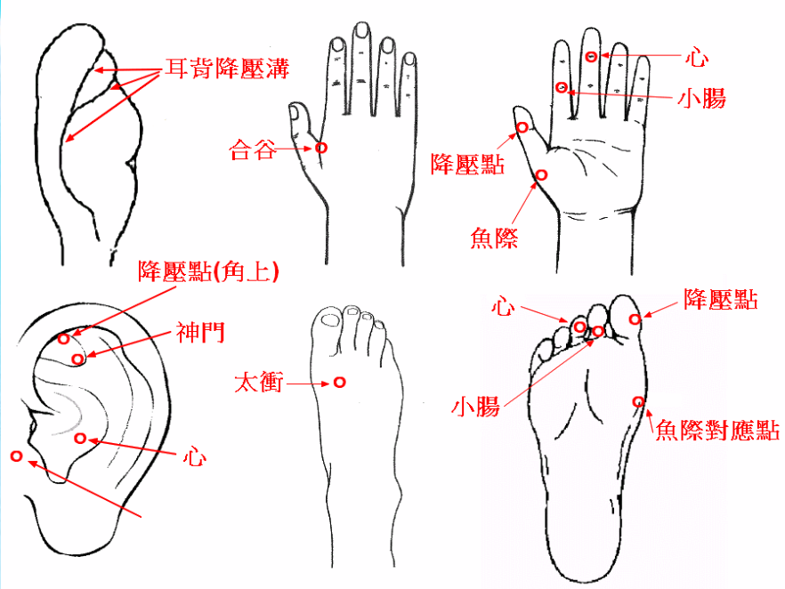

<h2>高血壓的處理<br></h2>         
<br>

<pre style="color: rgb(0, 0, 0); word-wrap: break-word; white-space: pre-wrap;">
<table align="left" border="1" cellpadding="1" cellspacing="1" width="300">
<tr><td>
<h3>
降高血壓正經定位 : <br>
1 太衝 、 太溪 、 曲池 <br>
2 足三里 3 、 人迎 ( 不可左右同按 ) <br>
<br>
另說 : <br>
1 患高壓高的高血壓時, 用小保健鎚敲擊兩側三陰交穴 <br>
2 患低壓高的高壓時 , 用小保健鎚敲擊兩側懸鍾穴 <br>
3 若血壓急劇升高則立即在兩耳尖放血 <br>

</h3></tr></td>
</table>
</pre>

